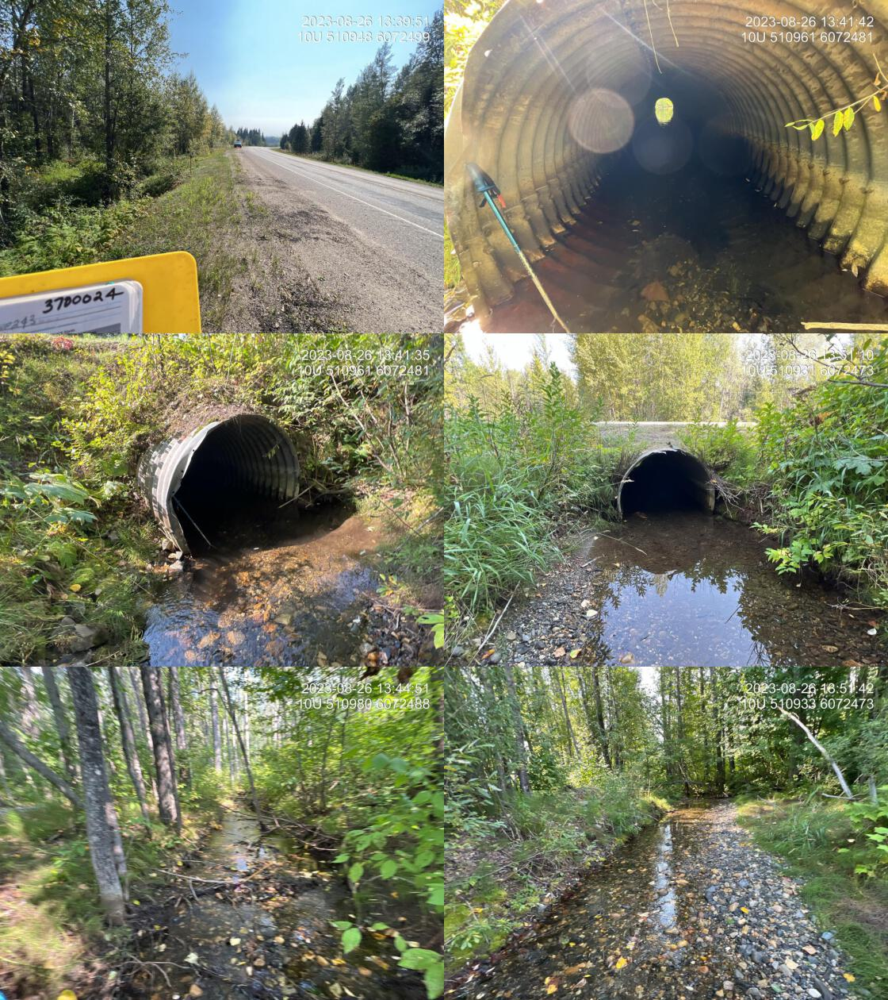

42 Mile Creek - 198687 - Appendix
Site Location
PSCIS crossing 198687 is located on 42 Mile Creek. This site is located on Highway 97, approximately 1km upstream from the confluence with the Crooked River.
Background
Upstream of crossing 198687, rainbow trout have previously been recorded (Norris 2022).
A summary of habitat modelling outputs is presented in Table 3.4. A map of the watershed is provided in map attachment 093J.118.
| Habitat | Potential | Remediation Gain | Remediation Gain (%) |
|---|---|---|---|
| BT Rearing (km) | 3.9 | 3.9 | 100 |
| BT Spawning (km) | 2.5 | 2.5 | 100 |
| BT Network (km) | 27.9 | 27.9 | 100 |
| BT Stream (km) | 26.6 | 26.6 | 100 |
| BT Lake Reservoir (ha) | 0.0 | 0.0 | – |
| BT Wetland (ha) | 0.0 | 0.0 | – |
| BT Slopeclass03 (km) | 2.0 | 2.0 | 100 |
| BT Slopeclass05 (km) | 4.7 | 4.7 | 100 |
| BT Slopeclass08 (km) | 8.1 | 8.1 | 100 |
| BT Slopeclass15 (km) | 10.5 | 10.5 | 100 |
| * Model data is preliminary and subject to adjustments. |
Stream Characteristics at Crossing
At the time of the survey, PSCIS crossing 198687 was un-embedded, non-backwatered and ranked as a passable to upstream fish passage according to the provincial protocol (MoE 2011) (Table 3.5). There was high flow through the culvert at the time of survey. A deep outlet pool (2m) and a large outlet drop (2m) indicate that the culvert may be undersized. Water temperature was 7.4\(^\circ\)C, pH was 6.8 and conductivity was 411uS/cm.
| Location and Stream Data |
|
Crossing Characteristics | – |
|---|---|---|---|
| Date | 2023-08-26 | Crossing Sub Type | Round Culvert |
| PSCIS ID | 198687 | Diameter (m) | 2 |
| External ID | – | Length (m) | 26 |
| Crew | AI | Embedded | Yes |
| UTM Zone | 10 | Depth Embedded (m) | 0.25 |
| Easting | 510950.3 | Resemble Channel | Yes |
| Northing | 6072479 | Backwatered | Yes |
| Stream | 42 Mile Creek | Percent Backwatered | 100 |
| Road | Highway 97 | Fill Depth (m) | 1.5 |
| Road Tenure | MOTI | Outlet Drop (m) | 0 |
| Channel Width (m) | 2.5 | Outlet Pool Depth (m) | 0.3 |
| Stream Slope (%) | 1.5 | Inlet Drop | No |
| Beaver Activity | No | Slope (%) | 0.5 |
| Habitat Value | High | Valley Fill | Deep Fill |
| Final score | 11 | Barrier Result | Passable |
| Fix type | – | Fix Span / Diameter | – |
| Photos: From top left clockwise: Road/Site Card, Barrel, Outlet, Downstream, Upstream, Inlet. | |||
| Comments: Nice stream with good flow and abundant gravel, suitably sized for spawning. Culvert is 100% backwatered and fully embedded. It appears as though there have been some very high flow events that have moved significant amounts of gravel, substrate, upstream and downstream. See photos. Channel seems overly straight and deep so suspect machine work has been done to dredge out the crossing, upstream and downstream. Ministry of Transportation chris_culvert_id: 1997302. 13:37:33 |
Stream Characteristics Downstream
The stream was surveyed downstream from crossing 198687 for 200m (Figures 3.7 - 3.8). The average channel width was 2.9m, the average wetted width was 1.6m, and the average gradient was 2.2%.Total cover amount was rated as abundant with overhanging vegetation dominant. Cover was also present as large woody debris.The dominant substrate was gravels with cobbles sub-dominant. There was an abundance of large woody debris that created deep pools, diverted water flow, and created natural steps. The habitat was rated as NA value for salmonid rearing.
Stream Characteristics Upstream
The stream was surveyed upstream from crossing 198687 for 600m (Figures 3.9 - 3.12). The average channel width was 3.1m, the average wetted width was 1.7m, and the average gradient was 2.8%.Total cover amount was rated as moderate with large woody debris dominant. Cover was also present as undercut banks and overhanging vegetation.The dominant substrate was cobbles with gravels sub-dominant. This stream has the potential to be fish bearing but the gradient is steep. The bank full depth is very high, with a measured average of 0.8m. There was an abundance of large woody debris that provided functionality to the stream habitat by diverting flow and providing cover. The habitat was rated as NA value as an important migration corridor containing suitable rearing habitat.
Structure Remediation and Cost Estimate
Should restoration/maintenance activities proceed, replacement of PSCIS crossing 198687 with a bridge (NAm span) is recommended. The cost of the work is estimated at $ for a cost benefit of linear m/$1000 and m2/$1000.
Conclusion
There was 3.9km of habitat modelled upstream of crossing 198687 with areas surveyed rated as NA value for salmonid rearing and spawning. 198687 was ranked as a NA priority for proceeding to design for replacement. Electrofishing upstream and downstream of the culvert is recommended to provide insight into fish community composition and density which may justify a higher priority for site remediation.
tab_hab_summary %>%
filter(Site == my_site) %>%
# select(-Site) %>%
fpr::fpr_kable(caption_text = paste0('Summary of habitat details for PSCIS crossing ', my_site, '.'),
scroll = F) | Site | Location | Length Surveyed (m) | Channel Width (m) | Wetted Width (m) | Pool Depth (m) | Gradient (%) | Total Cover | Habitat Value |
|---|---|---|---|---|---|---|---|---|
| 198687 | Downstream | 200 | 2.9 | 1.6 | 0.6 | 2.2 | abundant | – |
| 198687 | Upstream | 600 | 3.1 | 1.7 | 0.3 | 2.8 | moderate | – |
my_photo1 = fpr::fpr_photo_pull_by_str(str_to_pull = '_ds_typical1')
my_caption1 = paste0('Typical habitat downstream of PSCIS crossing ', my_site, '.')
Figure 3.7: Typical habitat downstream of PSCIS crossing 198687.
my_photo2 = fpr::fpr_photo_pull_by_str(str_to_pull = '_ds_typical2')
my_caption2 = paste0('Typical habitat downstream of PSCIS crossing ', my_site, '.')Figure 3.8: Typical habitat downstream of PSCIS crossing 198687.
my_caption <- paste0('Left: ', my_caption1, ' Right: ', my_caption2)
knitr::include_graphics(my_photo1)
knitr::include_graphics("fig/pixel.png")
knitr::include_graphics(my_photo2)my_photo1 = fpr::fpr_photo_pull_by_str(str_to_pull = '_us_typical1')
my_caption1 = paste0('Typical habitat upstream of PSCIS crossing ', my_site, '.')Figure 3.9: Typical habitat upstream of PSCIS crossing 198687.
my_photo2 = fpr::fpr_photo_pull_by_str(str_to_pull = '_us_typical2')
my_caption2 = paste0('Typical habitat upstream of PSCIS crossing ', my_site, '.')
Figure 3.10: Typical habitat upstream of PSCIS crossing 198687.
my_caption <- paste0('Left: ', my_caption1, ' Right: ', my_caption2)
knitr::include_graphics(my_photo1)
knitr::include_graphics("fig/pixel.png")
knitr::include_graphics(my_photo2)my_photo1 = fpr::fpr_photo_pull_by_str(str_to_pull = '_u3_')
my_caption1 = paste0('Typical habitat upstream of PSCIS crossing ', my_site, '.')Figure 3.11: Typical habitat upstream of PSCIS crossing 198687.
my_photo2 = fpr::fpr_photo_pull_by_str(str_to_pull = '_u4_')
my_caption2 = paste0('Typical habitat upstream of PSCIS crossing ', my_site, '.')Figure 3.12: Typical habitat upstream of PSCIS crossing 198687.
my_caption <- paste0('Left: ', my_caption1, ' Right: ', my_caption2)
knitr::include_graphics(my_photo1)
knitr::include_graphics("fig/pixel.png")
knitr::include_graphics(my_photo2)